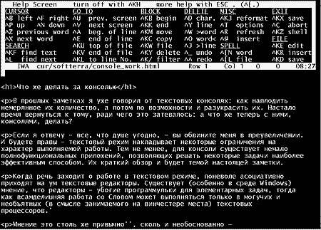

Посиделки за консолью
Автор: Алексей Федорчук,
[email protected]Опубликовано:
20.09.2001
Оригинал: http://www.softerra.ru/freeos/12718/
Продолжая начатый ранее
разговор о прелестях консольного режима Linux, давайте разберемся, как извлечь
из оных консолей хоть малую пользу и что же с ними можно делать?
Если я отвечу — все, что душе
угодно, — вы обвините меня в преувеличении. И будете
правы — текстовый режим накладывает некоторые ограничения на характер
выполняемой работы. Тем не менее, для консоли существует немало
полнофункциональных приложений, позволяющих решать некоторые задачи наиболее
эффективным способом. Какие? Об этом мы сегодня и поговорим.
Когда речь заходит о работе в текстовом режиме,
поневоле ассоциативно приходят на ум текстовые редакторы. Существует (особенно в
среде Windows) мнение, что редакторы — убогие программульки для элементарных
задач, тогда как всамделишняя работа со Словом может выполняться только в
могучих и необъятных (в смысле занимаемого на винчестере места) текстовых
процессорах [1].
Мнение это столь же привычно [2] , сколь и
необоснованно — именно редакторы есть наиболее подходящий инструмент
для создания текстов, претендующих на оригинальность, в силу того, что никакие
(обычно тщетные) потуги на декор не отвлекают от полета творческой мысли. При
этом возможности обработки (сиречь собственно редактирования) уже созданного
текста в редакторах отнюдь не уже, а уж о скорости как таковой просто и говорить
не приходится…
Впрочем, обо всем этом я уже писал. Возвращаясь
к теме, выскажу свое мнение — именно в работе с текстами проявляются
несравненные достоинства текстовой консоли. За более чем десятилетие
околокомпьютерной жизни мне довелось поработать и в Lexicon'е, и в Chiwriter'е
(помните о таком?), и в WodrPerfect'е еще для DOS. На долгое время остановился я
на AmiPro — по сей день считаю его вершиной в развитии текстовых
процессоров традиционного облика. Под гнетом принудительной силы реальности
оскоромился я и Word'ом. Пока, подобно персонажу рекламы, не открыл для себя
консольные текстовые редакторы для Linux. И с тех пор чувствую себя много
комфортней…
Хотя, чтобы осознать всю силу и величие
консольных текстовых редакторов, требуется некоторое напряжение мысли (да и
кистей рук — тоже). Перво-наперво следует уразуметь, что лучшие их
представители — это редакторы командные. То есть навигация по тексту и
его обработка в них осуществляется не посредством действий через меню, и, тем
паче, не щелканьем и перетаскиванием мышью, а отдачей прямых директив, вроде:
перейти на пять слов вперед, удалить пятую снизу строку, заменить строку номер
пятнадцать и т.д.
К такому образу действий нужно просто привыкнуть
и выработать соответствующие навыки, сравнимые с рефлексами собаки Павлова.
Зато, когда это свершится — жизнь становится простой и понятной.
Остается только выбрать наиболее подходящий инструмент лично для себя…
Когда речь заходит о консольных текстовых
редакторах для Linux, чаще всего упоминают два столпа в этой
области — vi, известный также под псевдонимами Vim и elvis, и emacs. Я
не буду вдаваться в обсуждение сакрального вопроса — какой из них
лучше: каждый редактор имеет свои достоинства, и возможности каждого с лихвой
перекрывают потребности среднестатистического пользователя.
Так, vi поначалу кажется порождением больного с
садомазохистскими наклонностями. Однако достаточно осознать внутреннюю его
логику — и начинаешь понимать, что более быстрого инструмента для
обработки текста человеческий разум еще не придумал. А многочисленные
возможности для его настройки (причем — выполняемые вполне
элементарно) обеспечивают должную функциональность такой обработки. Хотя, с
другой стороны, создание нарративных текстов — не самая сильная его
сторона…
Напротив, emacs поначалу кажется более понятным
(интуитивно, то есть когда нутром чуешь, что делать). Подкупает возможность
работы с практически любыми наборами символов (вплоть до китайских), даже если
они не поддерживаются системой как таковой — если это действительно
нужно. Ну и, как говорят, возможности расширения и
настройки — безграничны. Правда, тут-то и возникает некоторая
напряжека: чтобы этими возможностями воспользоваться, нужно знать, что такое
язык Lisp и как-то уметь на нем программировать.
А еще я не забывал бы и о скромном труженике joe
(рис. 1). Его система команд проще и, ИМХО, логичнее, чем в vi и emacs, вместе
взятых. Конечно, в отместку за это и возможностей он (в штатном исполнении)
предоставляет, казалось бы, поменьше. Однако это компенсируется возможностью
расширения путем создания собственных макросов простым протоколированием
действий. А когда понимаешь, что весь joe — это, в сущности, и есть
набор макросов собственного языка — возможности расширения и настройки
ограничиваются только собственной фантазией.

Рис. 1.
Консольный редактор joe с выведенной системой помощи
Работа с текстами подразумевает не только их
создание и обработку, но и форматирование, вплоть до верстки, для печати,
скажем, или для представления в Сети. Именно объединение средств набора и
форматирования обеспечило популярность текстовых процессоров — якобы
это облегчает жизнь. Вспомните серию работ Евгения Козловского — «Я
пишу и верстаю в Word'е», и ее контрверсию от Олега Малоглавца — «А я
пишу и верстаю в LaTeX'е». Опять же не буду вступать в дискуссию, а просто
скажу: я пишу в Joe, а верстку предпочитаю оставить другим — ей-богу,
у профессионала это получится лучше. А вот что касается вестки текстов для
Сети — тут с «простыми» текстовыми редакторами могут конкурировать
только специализированные средства типа HomeSite (в которых, думаю, мало кому
придет в голову тексты СОЗДАВАТЬ). Например, joe (например — не
потому, что он лучше, а потому, что я его лучше знаю) превращается в полноценный
редактор html-кода легким движением руки. Причем автоматизированный ввод тэгов
осуществляется параллельно с набором текстов, ничуть не отвлекая от этого
процесса.
Почитать на ту же тему на сайте «Софтерра»:
Вниманию вебмастеров: использование данной статьи возможно
только в соответствии
с правилами использования
материалов сайта «Софтерра»
(http://www.softerra.ru/site/rules/)